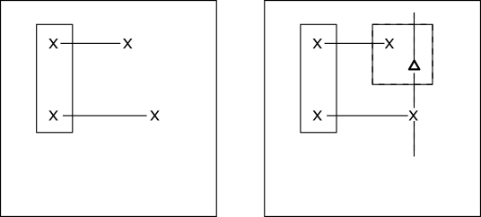
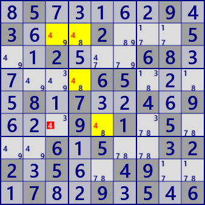
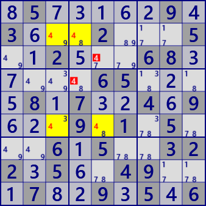
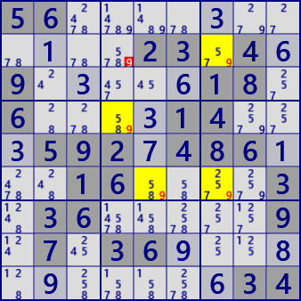
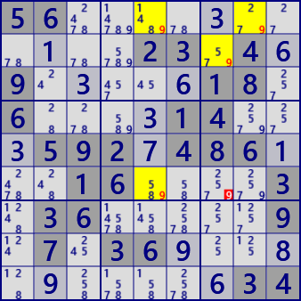

Skyscraper
For the description of Skyscraper, use cell-to-cell link and
ConnectedCells.
Skyscraper is a pattern type solution like LockedSet, Fish and consists of two strong links.
For two strong links of digit X, only one of the four end cells belongs to the same House (left figure).
At this time, X is excluded from the cell related to the remaining end cell(Δ cell in the right figure).

The analysis algorithm of Skyscraper is also the procedure of this figure.
- Set digit X
- Selection of two strong links
- Check that only one pair of link end points belong to the same House
- Search excluded candidate cells
Skyscraper is a relatively easy analysis method and it will be easy to find even if when humans play. Skyscraper is a relatively easy analysis method and it will be easy to find even when humans play. There may be several skyscrapers found on the same scene. The following figure is three skyscraper of each same scene.






.5.....9.3...2...5..2...68.....65....8.7..4.9...9.1.5...6.5..322.5..49...7..9.5.6(Upper）
56...........23.4.9.....18.6....14...592.486...16....3.36.....9.7.36...........34(Lower)）